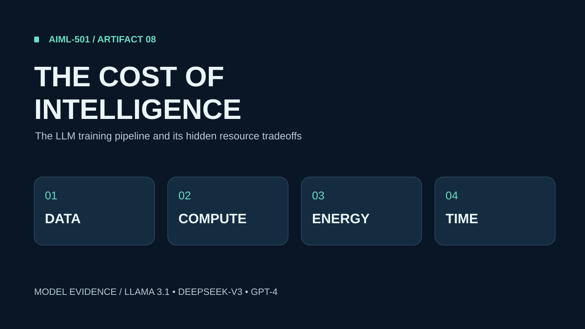

ARTIFACT 8 · RESEARCH-BASED VISUAL CASE STUDY
The Cost of Intelligence
From training data to deployment: how LLMs are built, what infrastructure they require, and why published cost figures need context.

View the visual artifact
If the PDF preview is unavailable, open it in a new tab.
Question & approach
What does it take to train an LLM, and how should infrastructure claims be interpreted? I classified the workflow into six process stages and its resource demands into data, compute, energy and time.
Evidence & limitations
The visual compares published information for Meta Llama 3.1 405B, DeepSeek-V3 and GPT-4. Reported GPU-hours and estimated compute rental costs do not necessarily represent all-in development spending; GPT-4 resource totals are not disclosed in its technical report.
Professional value
The artifact demonstrates evidence evaluation, infrastructure cost classification, and the ability to communicate technical investment tradeoffs to cross-functional and operational decision-makers. The companion document explains classification decisions, design rationale, limitations, citations and learning reflection.